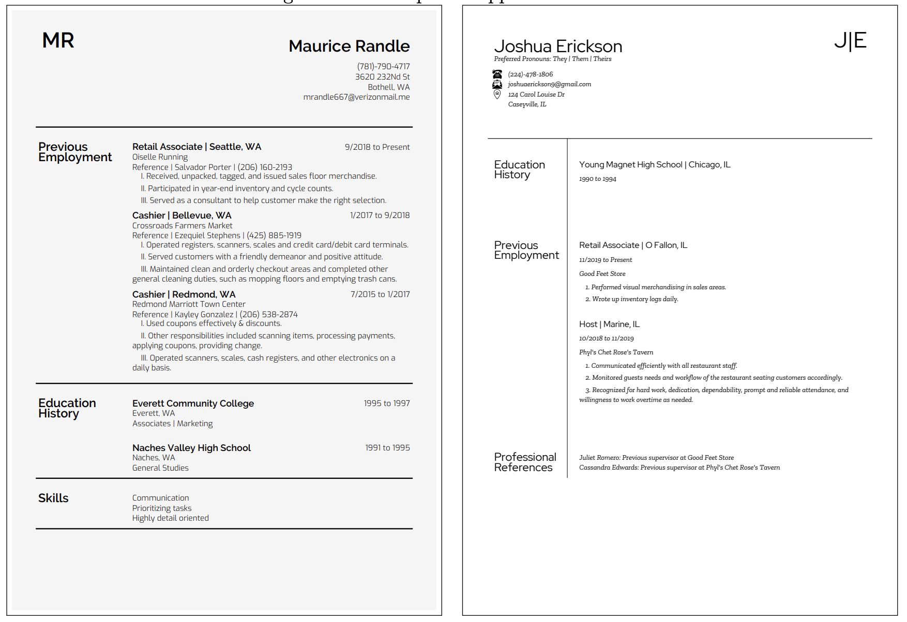
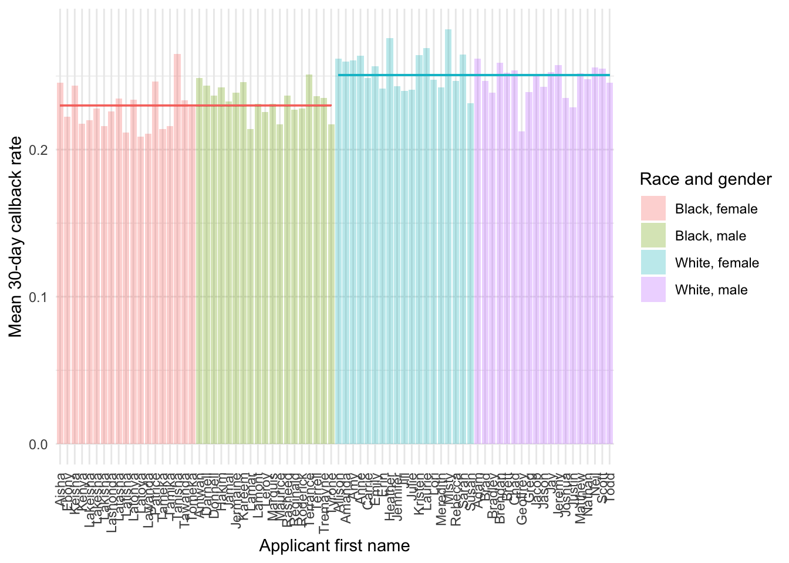
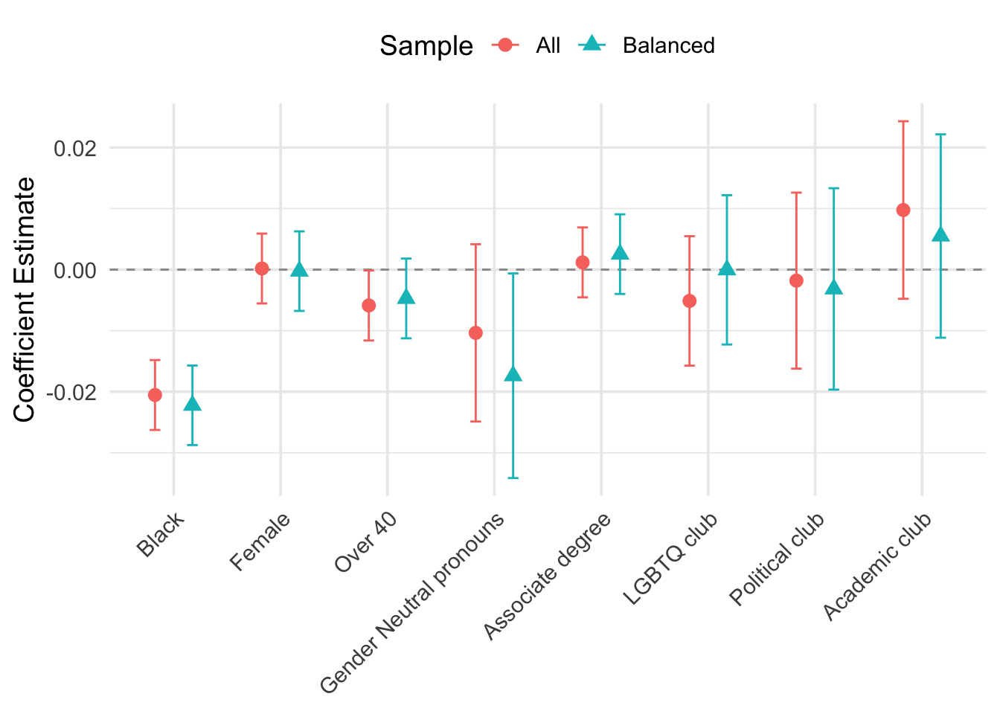
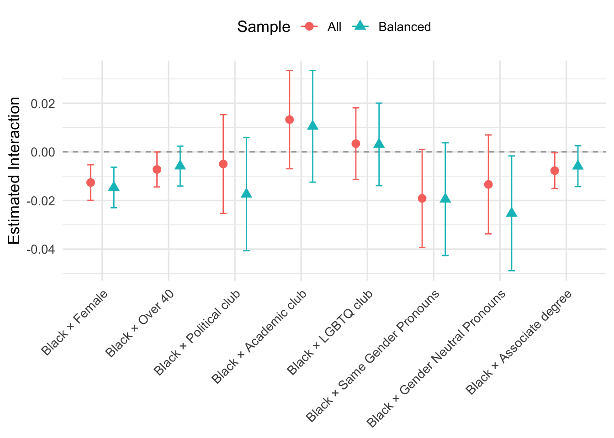

rm(list = ls())
# hide warnings
options(warn = -1)
suppressPackageStartupMessages(library(ggplot2))
suppressPackageStartupMessages(library(tidyverse))
suppressPackageStartupMessages(library(dplyr))
suppressPackageStartupMessages(library(stargazer))
suppressPackageStartupMessages(library(readxl))
suppressPackageStartupMessages(library(fixest))
suppressPackageStartupMessages(library(usmap))
suppressPackageStartupMessages(library(lfe))
suppressPackageStartupMessages(library(lmtest))
suppressPackageStartupMessages(library(sandwich))
suppressPackageStartupMessages(library(multiwayvcov))
suppressPackageStartupMessages(library(here))
suppressPackageStartupMessages(library(gtsummary))
suppressPackageStartupMessages(library(htmltools))
suppressPackageStartupMessages(library(broom))
suppressPackageStartupMessages(library(stringr))
data <- readRDS(here::here("dataset/cleaned_data.rds"))Analysis
Here we provide a detailed analysis using more sophisticated statistics techniques.
This comes from the file analysis.qmd.
Code Reference:
- Systemic Discrimination Among Large U.S. Employers
- R Markdown: The Definitive Guide
- R for Data Science
- R Markdown Cookbook
- R Markdown Reference Guide
- R Markdown Cheat Sheet
- gtsummary Package
Loading data
Motivation
Despite decades of regulatory and legal efforts to eliminate hiring discrimination, numerous field experiments continue to document persistent gaps in employer callback rates by race. In the study by Rose et al. (2022), the large-scale fake resume experiment among Fortune 500 firms in the US enables us to investigate the extent of taste-based discrimination in hiring practices.
In a nutshell, the study sends fake resumes with randomly assigned characteristics to entry-level positions among large U.S. employers. This is an example of how a sample of resumes looks like: 
Note: sourced from Figure A1: Examples of applicant resumes in the Rose et al. (2022) paper.
Research Questions
There is a famous saying:
Correlation does not imply causation.
This is especially true when it comes to the dialogue of racial disparity from a data-driven point of view. In the previous correlation-based analysis, the discrimination gap may have been misspecified due to omitted variable bias (OVB). For instance, instead of taste-based discrimination, labor market outcome inequality may be driven by different levels of educational attainment, work experience, or other factors that are not controlled for.
This analysis leverages the powerful experimental data and codes from the Rose et al. (2022) paper to estimate the causal impact of being Black on the probability of receiving a callback.
The analysis is based on the following research questions:
- Does tasted-based discrimination cause differential labor market outcomes in the U.S?
- If so, how large is the magnitude?
- Is there evidence of intersectional heterogeneity—that is, does the magnitude of the Black callback penalty vary by another trait?
- If so, how large is the magnitude?
- Do firm‑ or month‑level shocks attenuate or amplify measured discrimination?
Summary Statistics
| Variable | All Firms - Black N = 9,1411 |
All Firms - White N = 9,1341 |
Balanced - Black N = 32,6651 |
Balanced - White N = 32,7031 |
|---|---|---|---|---|
| Any contact | 1,972 (22%) | 2,103 (23%) | 7,647 (23%) | 8,380 (26%) |
| Any voicemail contact | 1,246 (14%) | 1,383 (15%) | 5,410 (17%) | 6,052 (19%) |
| Any email contact | 256 (2.8%) | 263 (2.9%) | 1,357 (4.2%) | 1,414 (4.3%) |
| Any text message contact | 470 (5.1%) | 457 (5.0%) | 880 (2.7%) | 914 (2.8%) |
| 1 n (%) | ||||
The first panel (“All Firms”) shows that Black applicants receive any form of contact in 22 percent of applications versus 23 percent for White applicants—a modest raw gap. When we restrict to the “Balanced” sample, the disparity widens: 23 percent versus 26 percent. Similar patterns hold for voicemails (17% vs 19%) and email/text contacts. These descriptive gaps motivate our causal estimation below and suggest that, even with the same pool of job postings, Black applicants face lower call‑back rates across multiple channels.
Descriptive Evidence by Applicants First Name

This figure shows mean contact rates by applicant first name, organized by race and gender group. The horizontal bars show race group mean contact rates. We can see that, on average, black names receive fewer 30-day callbacks than white names.
Effect of Taste-Based Discrimination on Contact Rates
Due to the nature of experimental data, we can estimate the causal effect of large employers’ taste-based discrimination on applicant labor market outcomes.
Model Specification
The code estimates the causal effect of being Black on the probability of receiving a callback, controlling for a vector of other resume characteristics. Formally, two specifications:
- Linear probability model (OLS):
- with controls for all sample
- with controls for a balanced sample
- two-way fixed effects for all sample
- two-way fixed effects for a balanced sample
- Logistic regression
- with controls for all sample
- with controls for a balanced sample
| Dependent variable: | ||||||
| Call Back Prob. | ||||||
| OLS | logistic | OLS | logistic | |||
| (1) | (2) | (3) | (4) | (5) | (6) | |
| Black | -0.021*** | -0.020*** | -0.115*** | -0.022*** | -0.022*** | -0.123*** |
| (0.003) | (0.003) | (0.016) | (0.003) | (0.003) | (0.018) | |
| Female | 0.0002 | 0.001 | -0.0002 | -0.002 | ||
| (0.003) | (0.016) | (0.003) | (0.018) | |||
| Over 40 | -0.006** | -0.033** | -0.005 | -0.027 | ||
| (0.003) | (0.016) | (0.003) | (0.018) | |||
| Political club | -0.002 | -0.010 | -0.003 | -0.017 | ||
| (0.007) | (0.041) | (0.008) | (0.046) | |||
| Academic club | 0.010 | 0.052 | 0.006 | 0.028 | ||
| (0.007) | (0.041) | (0.008) | (0.046) | |||
| LGBTQ club | -0.005 | -0.029 | -0.00004 | -0.001 | ||
| (0.005) | (0.030) | (0.006) | (0.034) | |||
| Same‑gender pronouns | -0.014* | -0.077* | -0.013 | -0.068 | ||
| (0.007) | (0.041) | (0.008) | (0.046) | |||
| Gender‑neutral pronouns | -0.010 | -0.057 | -0.017** | -0.095** | ||
| (0.007) | (0.041) | (0.009) | (0.048) | |||
| Associate degree | 0.001 | 0.007 | 0.003 | 0.014 | ||
| (0.003) | (0.016) | (0.003) | (0.018) | |||
| Sample | All Firms | All Firms | All Firms | Balanced | Balanced | Balanced |
| Firm FE | No | Yes | No | No | Yes | No |
| Month FE | No | Yes | No | No | Yes | No |
| Observations | 83,643 | 83,643 | 83,643 | 65,368 | 65,368 | 65,368 |
| R2 | 0.024 | 0.151 | 0.024 | 0.130 | ||
| Adjusted R2 | 0.024 | 0.150 | 0.024 | 0.129 | ||
| F Statistic | 126.977*** (df = 16; 83626) | 120.790*** (df = 123; 83519) | 101.025*** (df = 16; 65351) | 112.290*** (df = 87; 65280) | ||
| Note: | *p<0.1; **p<0.05; ***p<0.01 | |||||
| Clustered SEs by job | ||||||
Across all specifications, the coefficient on Black is consistently negative and highly significant. In the simplest linear probability model (column 1), being Black reduces the probability of any callback by about 2.1 percentage points (SE=0.3pp). When we add firm and month fixed effects (column 2), the gap narrows only slightly to 2.0 pp, indicating that sorting of Black resumes into “easier” or “tougher” firms/months accounts for very little of the raw disparity. In the balanced‐sample OLS (column 5), the Black penalty is essentially unchanged at 2.2 pp. The corresponding logistic regressions (columns 3 and 6) imply a roughly 11–12 percent reduction in the odds of callback for Black applicants, again robust to fixed effects and sample restrictions.
Among the other resume traits, Over 40 exhibits a modest negative effect in the unrestricted sample (–0.6 pp) but loses significance in the balanced sample. Gender itself (Female) has no discernible callback penalty or bonus. Signals like political, academic, or LGBTQ club affiliations never reach conventional significance, nor does holding an associate degree. Interestingly, the use of same‑gender pronouns on the résumé is associated with a small but borderline significant callback penalty in the basic models (–1.4 pp), and the neutral‑pronoun penalty becomes significant in the balanced OLS (–1.7 pp). This hints that nontraditional pronoun signaling may carry a slight cost in this context, though the effect sizes are small relative to the race gap.
The model fit remains modest: R² climbs from just 2.4 percent without fixed effects to about 15 percent once we absorb firm‐and‐month variation, underscoring that much of the callback decision is driven by idiosyncratic job‐level factors and unobserved employer preferences. All standard errors are clustered at the job level, and the F‑statistics confirm the joint significance of the regressors.
Key takeaway : Even after controlling for a broad vector of resume characteristics and accounting for firm/month heterogeneity, Black applicants face a persistent 2pp lower callback rate—roughly a 12 percent relative penalty—highlighting taste‑based discrimination in large‑firm hiring.
Visualization of OLS Estimates

We can observe that the coefficient estimates for the Black variable are negative and significant across all samples since the 95% confidence intervals do not include 0. Also, gender-neutral pronoun estimates are significant in the balanced sample.
Heterogeneity Analysis
In this section, we use interaction terms to explore how the effect of being Black on labor market outcomes varies across different characteristics of the resumes.

Although we don’t find a significant gender penalty in the baseline model, the black-female interaction remains significant across sample restrictions, indicating that Black women experience an extra callback penalty beyond what the additive race and gender effects predict.
The interaction term between Black and gender‑neutral pronouns is also significant in the balanced sample. In other words, Black applicants who include gender‑neutral pronouns on their résumé face an additional callback penalty.
Conclusion
This analysis leverages a large-scale résumé audit experiment to estimate the causal effect of race on callback rates at Fortune 500 firms. Across all linear probability and logit specifications—both unrestricted and balanced samples—being Black reduces the probability of any form of contact by roughly 2 percentage points (≈ 11–12 percent relative penalty), a gap that remains unchanged once we absorb firm and month fixed effects.
Pronoun usage carries a small penalty, and in the balanced sample the Black × Gender‑Neutral Pronouns and Black × Female interaction are also significant, indicating an extra penalty for Black applicants who signal intersecionality.
Limitations
External validity: Firms in the Fortune 500 may not reflect smaller or mid‑sized employers’ behavior. The generalizability of these results to other sectors or regions is uncertain. Future work could extend this analysis to a broader set of firms, including smaller employers or those in different industries.
Additional outcome: Social capital and social networks are important in the hiring process. Future work could explore how race affect social capital accumulation and its impact on hiring outcomes. For example, do Black applicants have fewer connections to employees at the firms they apply to? Do they receive fewer referrals or recommendations from friends or family members?
- A new study using LinkedIn: LinkedOut? A Field Experiment on Discrimination in Job Network Formation
More racial variation: Since this study only covers black-white differences, it would be interesting to see how other racial groups are affected. For example, do Asian applicants face similar or different discrimination patterns compared to Black applicants? Do Hispanic applicants experience different callback rates based on their names or other characteristics?